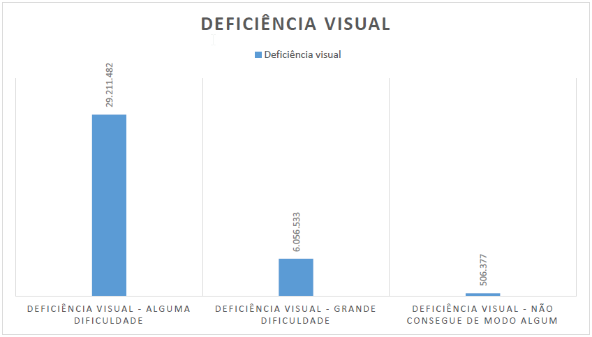

Acessibilidade na web
Para a maioria das pessoas, a tecnologia torna a vida mais fácil. Para uma pessoa com necessidades especiais, a
tecnologia torna as coisas possíveis.
RADABAUGH, 1993
Sobre acessibilidade na web
Existem diversas definições de acessibilidade web, sendo uma delas a possibilidade de garantir autonomia às pessoas com deficiência para navegar, acessar conteúdo, interagir e contribuir em uma web desenvolvida de forma acessível.
Quem é beneficiado por uma web acessível?
Acessibilidade na web é crucial para todos, mas é especialmente vital para pessoas com deficiência, que enfrentam barreiras permanentes e significativas no acesso à informação e comunicação. Todos nós nos beneficiamos quando a web é acessível para todos, independentemente de suas habilidades e necessidades.
Dados, Leis e Decretos
Dados
No mundo todo, mais de 1,3 bilhão de pessoas têm algum tipo de deficiência visual, enquanto no Brasil, cerca de 45,6 milhões de pessoas têm algum tipo de deficiência, o que equivale à população do Estado de São Paulo. No entanto, muitos sites brasileiros ainda apresentam falhas de acessibilidade, com apenas 0,1% dos sites avaliados sendo acessíveis, de acordo com a quarta pesquisa realizada pela BigData Corp em parceria com o Movimento Web para Todos.
Analisando o cenário brasileiro, é preocupante a quantidade de sites que apresentaram alguma falha de acessibilidade, a 4ª pesquisa conduzida pela BigData Corp em parceria com o Movimento Web para Todos, revelou que -1% dos sites são acessíveis. Apenas 0,46% dos sites avaliados tiveram sucesso em todos os testes.
Leis e Decretos
A acessibilidade na web é uma questão de direitos humanos e é regulamentada por leis e decretos, incluindo a Lei Brasileira de Inclusão da Pessoa com Deficiência (Estatuto da Pessoa com Deficiência), instituída pela Lei Nº 13.146, de 6 de julho de 2015. Embora o Brasil tenha uma legislação forte em relação à inclusão social das pessoas com deficiência, a aplicação efetiva dessas normas ainda é um desafio tanto para o governo quanto para a sociedade em geral.
Deficiência Visual e Tecnologia Assistiva
Dados
De acordo com o Censo 2010 do IBGE, quase um quarto da população brasileira tem algum tipo de deficiência, sendo que 18,8% têm deficiência visual, 5,1% têm deficiência auditiva, 7,0% têm deficiência motora e 1,4% têm deficiência mental ou intelectual. Em relação à deficiência visual, 29.211.482 pessoas apresentam alguma dificuldade, 6.056.533 grande dificuldade e 506.377 não conseguem enxergar de modo algum.
Deficiência visual
A deficiência visual é uma condição física irreversível que vai da baixa visão à cegueira e não pode ser corrigida com uso de lentes ou tratamentos.
Tecnologia assistiva
Segundo a Lei Brasileira de Inclusão, Tecnologia Assistiva são “produtos, equipamentos, dispositivos, recursos, metodologias, estratégias, práticas e serviços que objetivem promover a funcionalidade, relacionada à atividade e à participação da pessoa com deficiência ou com mobilidade reduzida, visando à sua autonomia, independência, qualidade de vida e inclusão social.” (LEI Nº 13.146, DE 6 DE JULHO DE 2015.)
Aplicabilidade
Eliminando barreiras de estrutura
Uma abordagem importante para tornar um site ou aplicação acessível é a eliminação de barreiras estruturais. Embora seja difícil alcançar a acessibilidade de 100%, dado que cada deficiência apresenta peculiaridades específicas, a eliminação dessas barreiras é um objetivo tangível e mensurável.
-
Elemento <title>
Um elemento fundamental para garantir a acessibilidade é o <title> da página. Esse elemento, que aparece apenas uma vez na página, deve ser utilizado dentro do bloco <head> e descrever o propósito da página de maneira clara, para que usuários que utilizam leitores de tela possam compreender o conteúdo da página. Por exemplo:
<title>Apt - Acesso para Todos</title>Além disso, nas páginas internas do site, é importante evitar o uso do mesmo título para todas elas, pois isso não atenderia ao propósito de apresentar uma prévia sobre o conteúdo de cada página acessada. Em vez disso, é recomendável utilizar títulos específicos que descrevam o conteúdo de cada página, como por exemplo:
<title>Leis | Apt - Acesso para Todos</title>
-
Estrutura de cabeçalho
Os elementos HTML <h1> a <h6> representam os seis níveis de título de seções presentes em uma página. O <h1> é o mais importante e segue em ordem decrescente até o <h6>, que é o de menor importância (MDN, 2022). É importante destacar que esses níveis de cabeçalho não devem ser usados para definir o tamanho da fonte, mas sim por meio de propriedades CSS.
Links úteis
W3C - Diretrizes
-
WCAG 2.0
A WCAG (Web Content Accessibility Guidelines) é um conjunto de diretrizes sobre acessibilidade para conteúdos disponíveis na internet, que apresenta recomendações para tornar o conteúdo acessível aos usuários, principalmente portadores de necessidades especiais.
-
WCAG 2.1
As Diretrizes de Acessibilidade para Conteúdo Web (WCAG) 2.1 abrangem diversas recomendações com a finalidade de tornar o conteúdo da Web mais acessível.
W3C Brasil - Cartilhas de Acessibilidade na Web
-
Cartilha de Acessibilidade na Web (Fascículo I)
Introdução
-
Cartilha de Acessibilidade na Web (Fascículo II)
Benefícios, Legislação e Diretrizes de Acessibilidade na Web
-
Cartilha de Acessibilidade na Web (Fascículo III)
Conhecendo o público-alvo da acessibilidade na Web
-
Cartilha de Acessibilidade na Web (Fascículo IV)
Tornando o conteúdo Web acessível
-
Cartilha de Acessibilidade na Web (Fascículo V)
Mantendo o conteúdo acessível
Referências
-
Acessibilidade na Web - Boas práticas para construir sites e aplicações acessíveis
Livro sobre acessibilidade na Web, do Autor: Reinaldo Ferraz
-
Movimento web para todos
Uma grande rede que conecta organizações, profissionais de desenvolvimento e pessoas com deficiência com o objetivo de mobilizar a sociedade para a causa da acessibilidade digital, e contribuir para transformar a web brasileira em um ambiente inclusivo para todas e todos.
-
Acessibilidade Toolkit
Este material foi criado com o intuito claro de facilitar a compreensão das diretrizes WCAG.
Avaliadores de acessilidade
-
W3C - Markup Validation Service
Este validador verifica a validade de marcação de documentos Web em HTML, XHTML, SMIL, MathML, etc.
-
accessMonitor
O validador de práticas de acessibilidade web (WCAG 2.1)